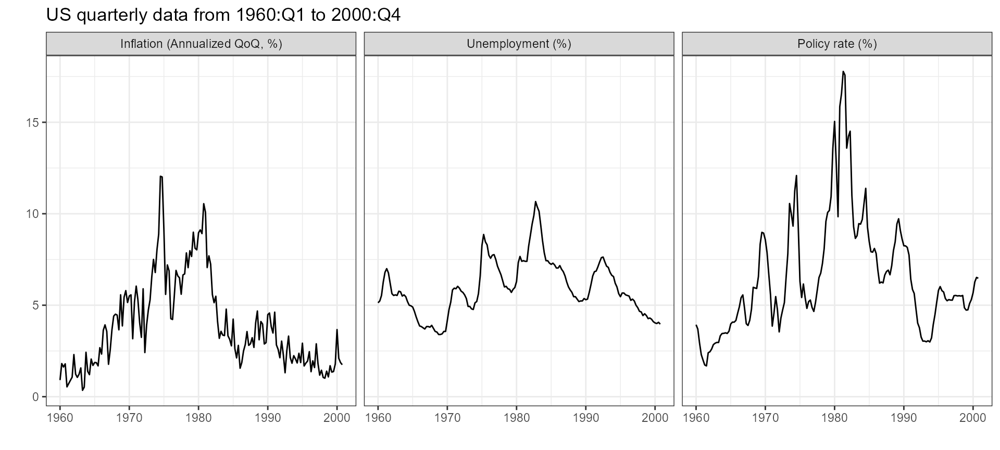

fc_labels <-
c(
"infl" = "Inflation (Annualized QoQ, %)",
"un" = "Unemployment (%)",
"ff" = "Policy rate (%)"
)
gather(sw2001, variable, value, -date, factor_key = TRUE) %>%
ggplot(aes(date, value)) +
geom_line() +
facet_wrap( ~ variable, labeller = labeller(variable = as_labeller(fc_labels))) +
theme_bw() +
labs(x = "", y = "",
# title = "Stock & Watson (2001). 'Vector Autoregressions'",
# subtitle = " Journal of Economic Perspectives",
title = "US quarterly data from 1960:Q1 to 2000:Q4")